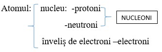
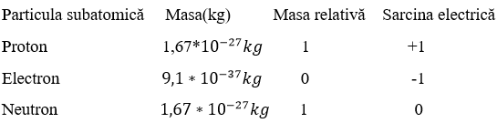

Atomul este cea mai mică parte a materiei care nu se mai poate divide prin metode chimice.
Atomul este format din nucleu și ȋnveliș de electroni.

Protonii, neutronii și electronii sunt particule fundamentale ale atomului.

Numărul protonilor din nucleu= numărul electronilor din ȋnvelișul electronic.
Atomul este neutru din punct de vedere electric.
Numărul protonilor din nucleu se notează cu Z și se numește nr. atomic.
Numărul neutronilor din nucleu se notează cu n sau N.
Suma dintre nr. protonilor și numărul neutronilor din nucleu se notează cu A și se numește număr de masă.
Toți atomii de același fel au același număr de protoni și formează un element chimic.
DEF. H: Sunt toți atomii care au un proton ȋn nucleu.
DEF. O: Sun toți atomii care au 8 protoni ȋn nucleu.
Izotopii au același număr atomic Z dar număr de masă diferit
AE=a/100 E1+b/100 E2+...